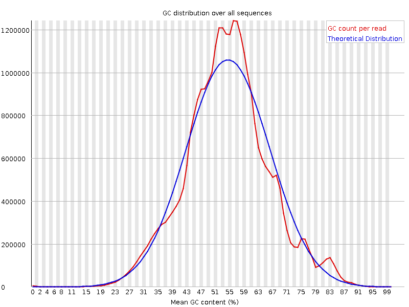

![[OK]](Icons/tick.png) Basic Statistics
Basic Statistics
| Measure | Value |
|---|---|
| Filename | F_grandis_NA_FW_3_R2.fastq.gz |
| File type | Conventional base calls |
| Encoding | Sanger / Illumina 1.9 |
| Total Sequences | 31111572 |
| Filtered Sequences | 0 |
| Sequence length | 100 |
| %GC | 53 |
Per base sequence quality
Per sequence quality scores
![[FAIL]](Icons/error.png) Per base sequence content
Per base sequence content
Per base GC content
Per sequence GC content

Per base N content

Sequence Length Distribution
Sequence Duplication Levels
![[WARN]](Icons/warning.png) Overrepresented sequences
Overrepresented sequences
| Sequence | Count | Percentage | Possible Source |
|---|---|---|---|
| CTGCAAGTCATTTAGCACCACGTTCTCCACAAACATGCTATGCGTAATCG | 39456 | 0.12682097838064885 | No Hit |
| AAAGAAACTAACCAGGATTCCCTCAGTAGCGGCGAGCGAAGAGGGAAGAG | 38194 | 0.12276460990142189 | No Hit |
| CCTCACCCGGCCCGGACACGGAAAGGATTGACAGATTGATAGCTCTTTCT | 34413 | 0.11061157565422923 | No Hit |
Kmer Content
| Sequence | Count | Obs/Exp Overall | Obs/Exp Max | Max Obs/Exp Position |
|---|---|---|---|---|
| TTTTT | 9499775 | 4.973682 | 7.5257244 | 2 |
| AAAAA | 8873550 | 4.499296 | 8.122717 | 2 |
| TTTAA | 4655525 | 2.4063919 | 6.812809 | 7 |
| AAGAA | 5454090 | 2.362718 | 6.0040693 | 2 |
| GAAAA | 4924785 | 2.1334226 | 5.7252984 | 2 |
| TTTCA | 4567920 | 2.0340345 | 5.2434397 | 6 |
| CTTTT | 4434685 | 1.9874038 | 5.270945 | 1 |
| AGAAA | 4464320 | 1.9339486 | 5.6313353 | 2 |
| TCAAA | 4209365 | 1.8505014 | 5.9067397 | 7 |
| GTTTT | 4016265 | 1.7850322 | 7.5670943 | 1 |
| TTCAA | 3784120 | 1.6742533 | 5.1141863 | 7 |
| ATTTA | 3235830 | 1.6725667 | 6.7079015 | 6 |
| TTGAT | 3750030 | 1.6560556 | 5.023181 | 3 |
| AAACT | 3737935 | 1.6432533 | 5.5996594 | 4 |
| GTGAA | 4320875 | 1.6094862 | 5.1931205 | 1 |
| GGGAA | 5032005 | 1.5911664 | 5.705831 | 1 |
| GGAAA | 4194960 | 1.5526013 | 7.043795 | 1 |
| GGAGA | 4901485 | 1.5498949 | 5.2968287 | 2 |
| GGGAG | 5170535 | 1.3968587 | 5.9854765 | 1 |
| GAAAC | 3706125 | 1.3830944 | 5.317621 | 3 |
| TCCAA | 3586435 | 1.3582442 | 5.1023126 | 7 |
| TTTAC | 3005200 | 1.3381759 | 5.0348935 | 7 |
| GAAAT | 2972065 | 1.2957805 | 5.3431087 | 3 |
| ATTCA | 2695535 | 1.1926178 | 5.1498594 | 6 |
| GTCGG | 4313795 | 1.1826593 | 5.669817 | 1 |
| ATCCA | 3113090 | 1.1789804 | 5.115766 | 6 |